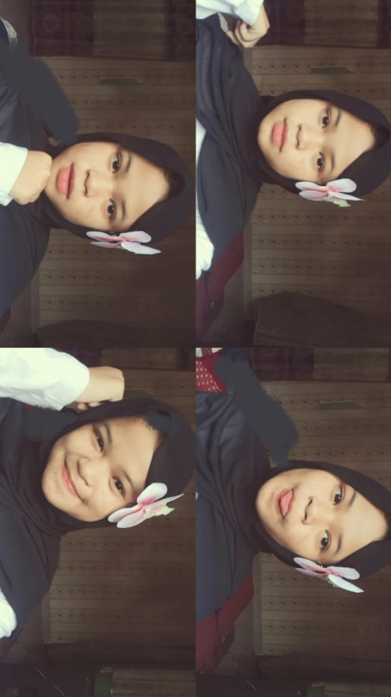

● ● ●
WISATA LAMPUNG Jelajah Destinasi Tentang
EXPLORE LOCALTemukan cerita
di setiap perjalanan.
di setiap perjalanan.
01 Personal portfolio / 2026
Siswa RPL yang sedang merangkai ide menjadi pengalaman web yang rapi, responsif, dan punya karakter.

Dari rasa ingin tahu
Saya Alfiyatul Waffa, siswa jurusan Rekayasa Perangkat Lunak di SMK Telkom Lampung. Saya menikmati proses mengubah halaman kosong menjadi antarmuka yang bisa dipahami dan digunakan orang lain.
Saat ini saya fokus memperkuat fondasi HTML, CSS, dan JavaScript sambil mengembangkan cara berpikir yang lebih terstruktur dalam setiap proyek sekolah maupun eksperimen pribadi.
Mari terhubung ↗Beberapa alat yang saya gunakan untuk berlatih, bereksperimen, dan mewujudkan ide digital.
Struktur halaman yang semantik dan mudah dipahami.
Layout responsif, visual yang konsisten, dan detail interaksi.
Membuat halaman lebih hidup dengan logika dan DOM.
Eksperimen dan tugas yang menjadi ruang latihan saya sebagai siswa RPL.
Punya ide atau sekadar ingin menyapa?
Saya terbuka untuk belajar bersama, kolaborasi kecil, dan percakapan seputar dunia web.